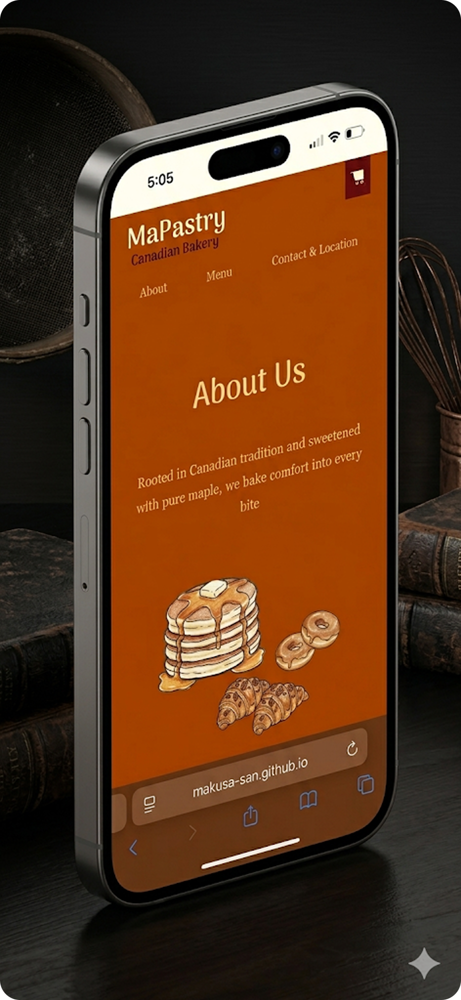
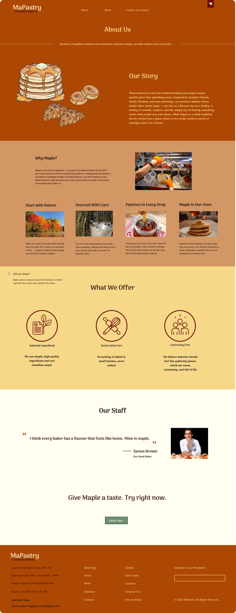

MaPastry Cafe
Link to Website ↗A modern bakery website designed to showcase a unique maple syrup concept through clear navigation,
strong visual identity, and a seamless user experience that encourages easy browsing and ordering.
A modern bakery website designed to showcase a unique maple syrup concept through clear navigation,
strong visual identity, and a seamless user experience that encourages easy browsing and ordering.

Create a simple, intuitive experience that allows users to easily explore the brand and take action. Focus on clear navigation, strong visual hierarchy, and a warm, cohesive aesthetic that reflects Maple Syrup Pastry. Highlight the bakery's unique concept through distinctive design choices, creating a memorable and modern experience that feels both convenient and refined.
Local bakery websites often lack clear structure and personality. Menus can be hard to browse, product details are limited, and the overall experience feels generic. Users may struggle to quickly understand what makes the bakery unique or how to place an order.
A warm, distinctive design system that reflects the maple syrup concept, making the brand feel unique and memorable.
Minimal, intuitive layout that helps users move easily between menu, story, and ordering without confusion.
Clear calls to action like "Order now", guiding users toward quick decisions.
Dedicated sections to communicate the concept and uniqueness of the bakery, building emotional connection and trust.


This project helped me better understand the balance between design and usability. I learned how important clear hierarchy and navigation are in web design, and how thoughtful visual choices can strengthen a brand’s identity. It also improved my skills in Figma and front-end development, especially in turning a concept into a functional interface.
3 Pages Example

